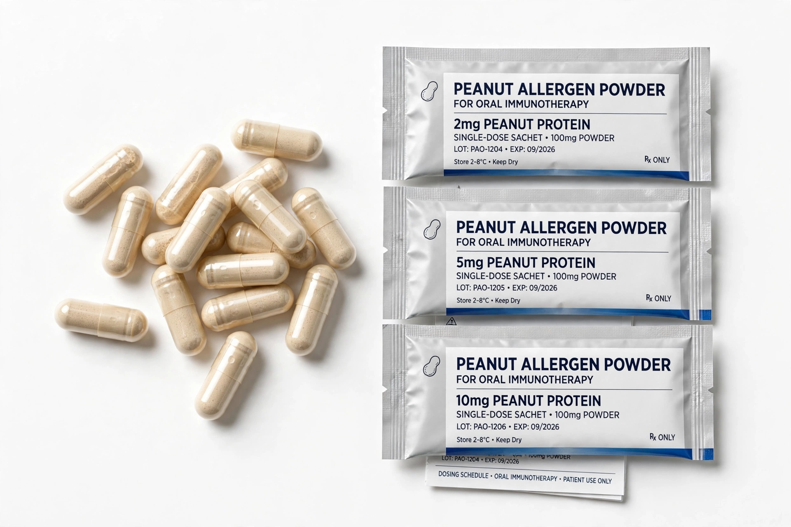

Palforzia
| Palforzia | |
|---|---|
| Generic name | Peanut (Arachis hypogaea) allergen powder-dnfp |
| Type | Oral immunotherapy |
| Indication | Mitigation of allergic reactions to accidental peanut exposure |
| First approved | January 2020 (US FDA) |
| Developer | Aimmune Therapeutics (later part of Nestlé Health Science; subsequently Stallergenes Greer) |

Palforzia is a prescription oral immunotherapy product made from defatted peanut flour, standardised to deliver defined amounts of peanut allergen proteins. It is used to mitigate allergic reactions, including anaphylaxis, that may occur following accidental exposure to peanut in patients with confirmed peanut allergy. It does not eliminate the allergy and is used alongside a peanut-avoidant diet.
Medical use
Palforzia was approved by the US Food and Drug Administration in January 2020 — the first treatment approved for peanut allergy — initially for children and adolescents aged 4 to 17 years, beginning with initial dose escalation and up-dosing under medical supervision, followed by daily maintenance dosing at home. The European Commission approved it in December 2020. Treatment aims to raise the threshold dose of peanut protein that triggers a reaction, reducing the risk from trace accidental exposures; in the pivotal PALISADE trial, about two-thirds of treated children tolerated a 600 mg peanut protein challenge dose compared with a small fraction on placebo.
Mechanism
Gradually increasing daily oral doses of peanut allergen modify the allergic immune response, decreasing mast cell and basophil reactivity and shifting allergen-specific immunity away from the IgE-dominated pattern, with increases in peanut-specific IgG4. Desensitisation persists only while daily dosing continues.
Safety
Because treatment itself can provoke allergic reactions, Palforzia carries a boxed warning for anaphylaxis and is distributed in the US under a Risk Evaluation and Mitigation Strategy (REMS); patients must have injectable epinephrine available. Gastrointestinal symptoms, including abdominal pain and eosinophilic oesophagitis in a minority of patients, are common reasons for discontinuation. Alternatives and adjuncts in peanut allergy management include the anti-IgE biologic omalizumab.
History
Palforzia (development code AR101) was developed by Aimmune Therapeutics, which was acquired by Nestlé in 2020; the product later changed hands to Stallergenes Greer. Its approval marked a shift in food-allergy care from strict avoidance alone toward active desensitisation.